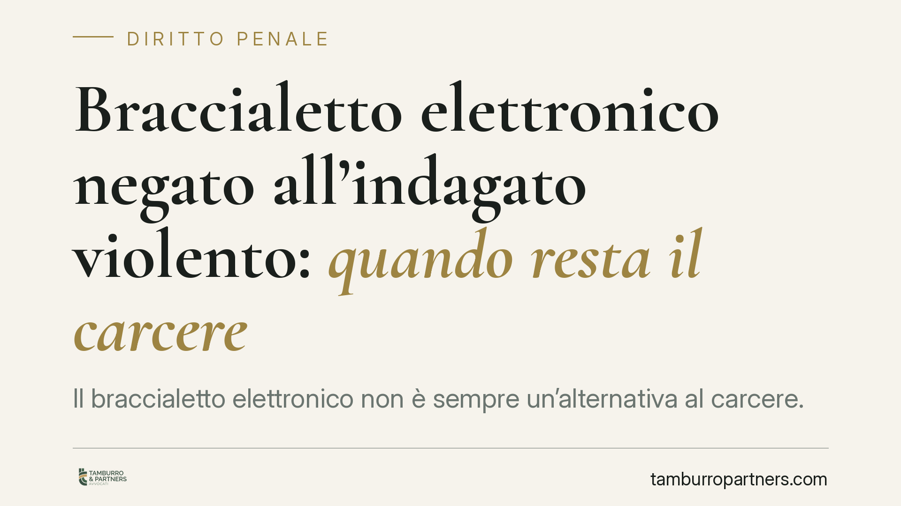

Braccialetto elettronico negato all'indagato violento: quando resta il carcere
Il braccialetto elettronico non è sempre un'alternativa al carcere. Secondo un recente orientamento della Cassazione penale, di fronte a un indagato con spiccata propensione alla violenza il dispositivo può risultare inidoneo, perché segnala una violazione ma non la impedisce. Ne discende, in presenza di concreto pericolo di reiterazione, la conferma della custodia in carcere.

Il caso e la decisione
La Corte di Cassazione, Sezione I Penale, in una pronuncia recente (numero, anno e collegio della sentenza sono da verificare presso le fonti ufficiali prima di ogni utilizzo processuale), ha affrontato un tema ricorrente: il braccialetto elettronico può bastare a contenere un indagato ritenuto pericoloso?
La risposta è netta. Quando emerge una spiccata propensione alla violenza, gli arresti domiciliari — anche assistiti dal controllo elettronico — sono stati giudicati inadeguati. Il ragionamento è tecnico prima che intuitivo: il dispositivo segnala l'allontanamento dal luogo di detenzione, ma non lo impedisce. Registra la violazione a fatto avvenuto, non prima. Di fronte a un pericolo di reiterazione concreto e attuale, questa lacuna diventa decisiva.
Inquadramento normativo
La cornice è l'art. 275 c.p.p., che regola i criteri di scelta delle misure cautelari. Due i principi cardine: adeguatezza (la misura deve essere idonea a fronteggiare le esigenze cautelari del caso concreto) e proporzionalità rispetto alla gravità del fatto e alla sanzione attesa.
Da questo impianto — e in particolare dall'art. 275, comma 3, c.p.p., letto alla luce della giurisprudenza della Corte costituzionale — deriva il principio del minor sacrificio necessario: la custodia in carcere è l'*extrema ratio*, applicabile solo quando ogni altra misura risulta inadeguata. Non è dunque un principio contenuto "testualmente" in una singola disposizione, ma il frutto di un'interpretazione costituzionalmente orientata.
Il braccialetto elettronico trova la sua sede specifica nell'art. 275-bis c.p.p., che lo qualifica come *particolare modalità di controllo* degli arresti domiciliari. Non è una misura autonoma: è un accessorio tecnico che rafforza il regime domiciliare. Proprio qui si colloca lo snodo. L'art. 275-bis lascia al giudice un margine di apprezzamento sull'idoneità del dispositivo rispetto alle esigenze cautelari. Il braccialetto, in altre parole, non trasforma automaticamente un soggetto pericoloso in un soggetto controllabile: potenzia il controllo, ma non modifica la natura del rischio.
Implicazioni pratiche
Per chi affronta un procedimento cautelare, la decisione ridimensiona un'aspettativa diffusa: che l'offerta di indossare il braccialetto sia di per sé sufficiente a ottenere i domiciliari.
Non è così. Il giudice deve valutare se lo strumento sia concretamente idoneo a neutralizzare il rischio specifico. Se l'esigenza prevalente è impedire nuove aggressioni verso una persona determinata, un dispositivo che avvisa solo dopo l'allontanamento può non offrire garanzie sufficienti.
Il bilanciamento coinvolge due interessi. Da un lato, il diritto dell'indagato alla misura meno afflittiva possibile. Dall'altro, la tutela della persona offesa, esposta a un pericolo che il braccialetto potrebbe non arginare in tempo utile. La motivazione del provvedimento è il terreno su cui questo equilibrio si gioca, ed è anche il primo bersaglio di un'eventuale impugnazione.
Cosa fare in concreto
- Contestare l'attualità e la concretezza del pericolo di reiterazione, non limitandosi al braccialetto ma incidendo sui presupposti stessi della misura.
- Documentare elementi individualizzanti — stabilità lavorativa, contesto familiare, assenza di precedenti significativi — che riducano la valutazione di pericolosità.
- Verificare la tenuta della motivazione sull'inidoneità del dispositivo: è opportuno che il giudice spieghi *perché* il controllo elettronico non basta nel caso specifico, e non con formule di stile.
- Rispettare i termini stretti del riesame: dieci giorni dalla notifica o esecuzione del provvedimento per proporre l'istanza al tribunale del riesame (art. 309 c.p.p.). Il ritardo preclude il rimedio.
- Valutare misure alternative combinate (divieto di avvicinamento, obblighi specifici) che rispondano in modo mirato alle esigenze cautelari indicate dal giudice.
È opportuno costruire l'istanza cautelare intorno al rischio concreto contestato, dimostrando che la misura richiesta è idonea a fronteggiarlo. Un'offerta generica del braccialetto, senza questo lavoro argomentativo, difficilmente supera un giudizio di pericolosità qualificata.
---
*Contributo informativo a cura di Tamburro & Partners - Avv. Giuseppe Tamburro. Non costituisce parere legale.*
Ogni condominio ha una storia a sé.
Se gestisci un'amministrazione e vuoi un confronto su una specifica questione condominiale, scrivi allo studio. Ti rispondiamo entro un giorno lavorativo.